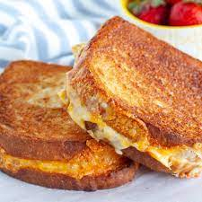

Grilled Cheese

Description
This is a recipe for grilled cheese in an air fryer. The benefits of an air fryer vs. grilling is that an air fryer provides more "crisp" by dehydrating moisture content. It tastes just as great, but with a new texture for those with texture-adversions.
Ingredients
- Your favorite sliced bread (although Texas Toast works great!)
- Cheese slices or shredded cheese
- Butter
Steps
- Butter one side of each slide of toast evenly
- Place 2-3 cheese slices on the unbuttered side of toast and put bread together, butter-side facing out
- Optional Step
- Add a slice of meat such as ham with the cheese if desired.
- Place grilled cheese in toaster oven and set to 390 degrees F
- Set timer to 10 minutes. After 5 minutes has passed, flip grilled cheese over to grill both sides evenly
- After time is done, take grilled cheese out and allow to cool for at least 5 minutes.
- Eat and enjoy!
If you enjoyed this recipe, share with your friends!